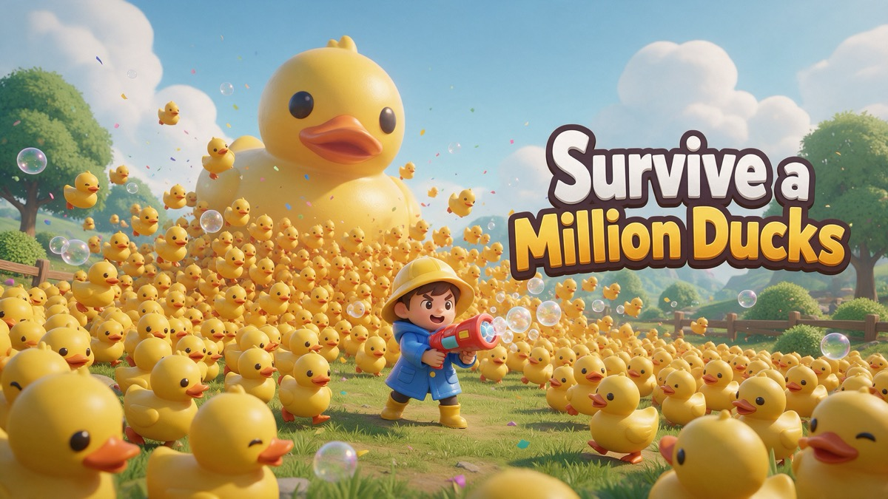

Survive a Million Ducks: a 10-minute rubber-duck survivor

A million rubber ducks are waddling toward you, and you have to last 10 minutes. Survive a Million Ducks is a 3D survivor-style arena game: you only move, and your weapons fire on their own.
How a run works
- Pop ducks to drop crumbs, and collect crumbs to level up.
- Each level, pick one of three random upgrades: Bubble Blaster, Squeaky Hammers that spin around you, a Soap Shockwave, Fast Boots, extra health, a crumb magnet, more damage or Band-Aids for regeneration.
- Watch out for speedy, chonky and golden ducks, and a MEGA DUCK boss every two minutes.
- Coins from each run buy permanent upgrades, so every attempt gets you further.
From the play-tests
Early players averaged close to six minutes per run. Next we want to add more duck types and a few new weapons.
Controls
Phone: drag to move. Desktop: WASD or arrow keys.
Play it free in your browser →Made by Holiday Play Studio, a small indie studio. We design our games with the help of AI coding tools (Claude Code), then play-test and polish them by hand. The games are free to play in your browser.